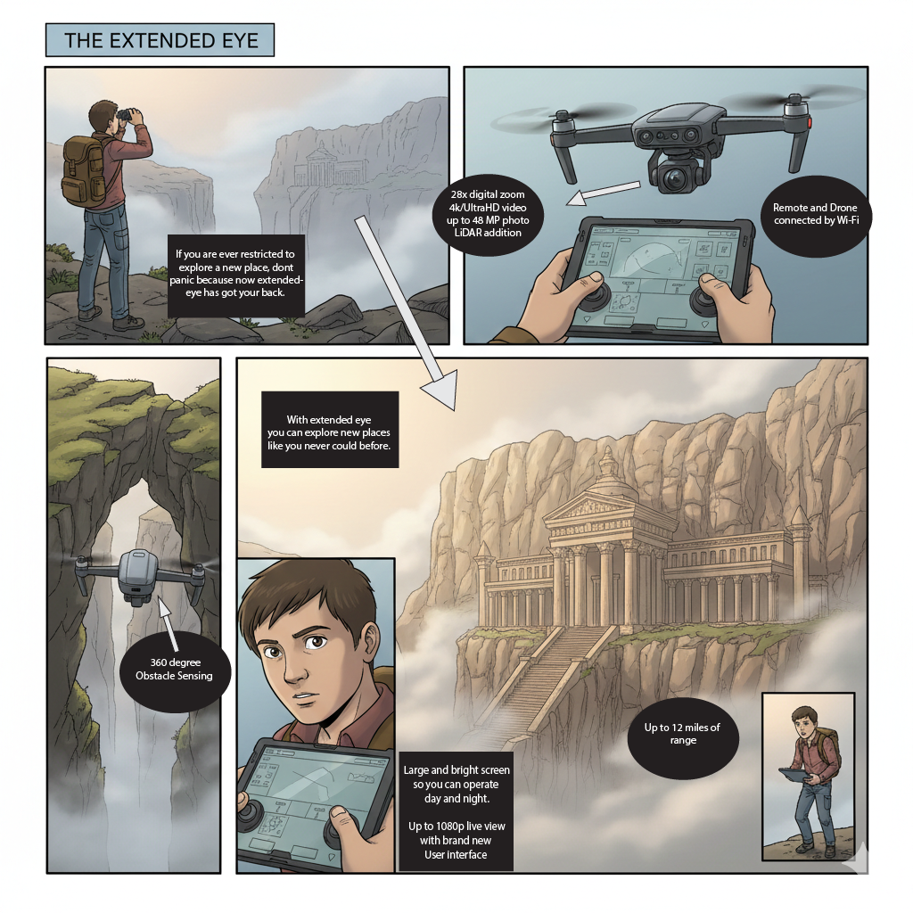

Concept Generation and Design Ideation
Overview
The goal of Team 304’s exploration device is to be able to remotely observe, record, interpret, and transmit data on natural phenomena that cannot easily be investigated by humans alone. With this template in mind, Team 304 must also integrate a human-machine interface, wireless communication, sensor and actuator subsystems, and a controller as per the requirements of the project.
As for the audience of our device, we want to target the curious, anyone interested in engaging in the scientific study of our world through data collection and physical observation. Team 304 aims to satisfy the ordinary person who would like to explore the world and beyond.
Generating Ideas
Below are ~100 listed ideas
| # | Features | Detail |
|---|---|---|
| 1. | Display and HMI | Device has an LED screen to display data and for HMI |
| 2. | Camera system | Device has a camera to record observations |
| 3. | Data storage | Device can save/store the data that it collects |
| 4. | Environmental durability | Device is designed to withstand outdoor conditions |
| 5. | Mounting system | Device is mountable |
| 6. | Motorized positioning | Device has a motor to accurately position sensors for data collection |
| 7. | Camera focus control | Device has focus features |
| 8. | Optical zoom | Device can zoom in-out |
| 9. | Portability | Device is portable |
| 10. | Water resistance | Device is submersible |
| 11. | Power control | Device contains an on/off switch |
| 12. | Battery power | Device runs off batteries |
| 13. | External power supply | Device power supply is from the wall outlet |
| 14. | Remote operation | Device can be used remotely |
| 15. | Modular components | Device has replaceable parts |
| 16. | Status indicators | Device uses LEDs to show operation |
| 17. | Backlit interface | Device’s HMI is illuminated for ease of operation |
| 18. | Bluetooth communication | Device transmits data wirelessly through Bluetooth |
| 19. | Base stabilization | Device has a stable base component |
| 20. | Low light imaging | Device can capture low light scenarios |
| 21. | Terrain mobility | Device can navigate uneven terrain |
| 22. | Speed control | Device can adjust speed |
| 23. | Auto return function | Device can return to the starting point |
| 24. | GPS integration | Device can connect to GPS |
| 25. | USB-C charging | Device can be recharged via USB-C |
| 26. | Protective enclosure | Device housing can protect internal components |
| 27. | Fault protection | Device can safely shut down if the electrical fails |
| 28. | Expandability | Device accepts interchangeable components for upgrades |
| 29. | Firmware update support | Device supports future software updates |
| 30. | Wind resistance | Device handles extreme winds |
| 31. | Impact resistance | Device can withstand a crash landing |
| 32. | Regulatory compliance | Device does not need a license to operate |
| 33. | Self correction system | Device can recorrect position if out of position |
| 34. | Low signal operation | Device can operate with low signal |
| 35. | Hazard detection | Device can detect hazardous environmental conditions |
| 36. | Audio output | Device can play sounds |
| 37. | Alert and warning system | Device can alert if danger is present |
| 38. | Mode switching | Device can switch between controlled and autonomous modes |
| 39. | Autonomous observation | Device can observe natural phenomena without direct human presence |
| 40. | Long term data logging | Device can collect long term environmental data |
| 41. | Environmental trend monitoring | Device can record changes in environmental conditions over time |
| 42. | Real-time data transmission | Device can transmit data collected to users in real time |
| 43. | Data analysis support | Device can support scientific data analysis |
| 44. | Hazardous environment operation | Device can operate in environments that are unsafe for humans |
| 45. | Automated data collection | Device can reduce human error in data collection |
| 46. | Precision sensing | Device can improve the accuracy of field observation |
| 47. | Remote exploration capability | Device can enable remote scientific exploration |
| 48. | Machine learning processing | Device uses machine learning |
| 49. | Sonar sensing | Device can utilize sonar functions |
| 50. | Panoramic imaging | Device has 360-degree cameras |
| 51. | Remote configuration | Device behavior can be adjusted remotely |
| 52. | Autonomous navigation | Device can reliably navigate itself |
| 53. | Excavation mechanism | Device can dig |
| 54. | Thermal cooling system | Device can cool itself in high temperatures |
| 55. | Solar power generation | Device has solar panels |
| 56. | Self-righting mechanism | Device can recover from being flipped over |
| 57. | Self-repair capability | Device can repair itself in cases of physical damage |
| 58. | High temperature operation | Device has a high temperature mode |
| 59. | Low temperature operation | Device has a low temperature mode |
| 60. | Data protection system | Device prioritizes protecting its data in dangerous situations |
| 61. | Infrared imaging | Device has an infrared camera |
| 62. | Cryogenic sample handling | Device can freeze samples |
| 63. | Sample heating system | Device has a heating system for high-temperature samples |
| 64. | Ultraviolet sensing | Device can detect UV-ray concentrations |
| 65. | Color anomaly detection | Device notifies operator of unusual colors in the environment |
| 66. | Night vision imaging | Device has image intensification capabilities (night vision) |
| 67. | Oxygen sensing | Device detects oxygen concentration |
| 68. | Air density sensing | Device detects air density |
| 69. | Gas detection | Device detects gases |
| 70. | Liquid composition analysis | Device can determine the mixture of liquids |
| 71. | Phase detection | Device can tell the difference between a liquid and a solid surface |
| 72. | Phase discrimination | Device can tell the difference between gas and liquid |
| 73. | Hover capability | Device can hover |
| 74. | Aerial mobility | Device can fly |
| 75. | Buoyancy control | Device can float |
| 76. | Multi-mode mobility | Device can switch between transport modes |
| 77. | Aerodynamic design | Device is aerodynamic |
| 78. | Environmental camouflage | Device can blend in with the environment |
| 79. | Construction capability | Device can build structures |
| 80. | Remote moisture detection | Device can detect water on distant terrestrial objects |
| 81. | Vacuum operation | Device can traverse in a vacuum |
| 82. | Sample storage system | Device has multiple storage compartments for different sample types |
| 83. | Mining system | Device has high-performance mining ability |
| 84. | Distance measurement | Device can automatically determine distance |
| 85. | System diagnostics | Device can alert user of code errors |
| 86. | Scheduled operation | Device observation can be set for specific times |
| 87. | Light cycle detection | Device can detect night and day cycle |
| 88. | Target loss notification | Device can alert user if observed object is no longer visible |
| 89. | Data visualization | Device can plot charts based on gathered data over several sessions |
| 90. | Sustainable enclosure | Device housing is made from recyclable materials |
| 91. | Multi-phenomenon sensing | Device can be used to observe multiple types of phenomena |
| 92. | Battery monitoring | Device can alert user of battery level |
| 93. | Wireless command interface | Device can accept commands from the user using Bluetooth or Wi-Fi |
| 94. | Ambient temperature sensing | Device has a temperature sensor to monitor external temperatures |
| 95. | Portability | Device can be easily stored |
| 96. | Connectivity | Device has an app |
| 97. | Device Architecture | Device is modular |
| 98. | Software Function | Device has low power mode |
Sort, Rank, and Group
Here, we created 5 groups which we felt were important, and sorted the 98 concepts to see what we needed to focus on.
| Group # | Category | detail |
|---|---|---|
| 1. | Power | 1. Device contains an on/off switch 2. Device runs off batteries 3. Device can safely shut down if electrical fails 4. Device can be recharged from wall outlet 5. Device can shut down automatically 6. Device can alert user of battery level 7. Device has a low-power mode |
| 2. | Data Collection | 1. Device can save/store the data that it collects 2. Device has a camera to record observations 3. The device can track a selectable object 4. Device has a motor to accurately position sensors 5. Device can alert user if observed object is no longer visible 6. Device has an infrared camera 7. Device can zoom in-out on data 8. Device can detect night and day cycle 9. Device can capture low light scenarios 10. Device can automatically determine distance 11. Device can return to starting point 12. Device can detect hazardous environmental conditions 13. Device has a temperature sensor to monitor external/internal temperatures 14. Device can analyze long term environmental data 15. Device can alert user of changes in environmental conditions over time 16. Device has software that can assist scientific data analysis 17. Device can detect uv-ray concentrations 18. Device detects oxygen concentration 19. Device detects air density 20. Device detects gases 21. Device can determine the mixture of liquids 22. Device can tell the difference between liquid and solid surface 23. Device can tell the difference between gas and liquid 24. Device can utilize sonar functions 25. Device has a heating system for high-temperature samples 26. Device can freeze samples 27. Device can detect water on distant terrestrial object |
| 3. | HMI | 1. Device has an LED screen to display data and for HMI 2. Device’s HMI is illuminated for ease of operation 3. Device has camera focus features 4. Device does not need a license to operate 5. Device can play sounds 6. Device can plot charts based on gathered data over several sessions 7. Device notifies operator of unusual colors in environment 8. Device can switch between controlled and autonomous modes 9. Device can adjust speed of motors according to input 11. Device can alert if danger to device is present 12. Device can reduce human error in data collection 13. Device uses machine learning based on user inputs 14. Device can be used to observe multiple types of phenomena according to user input 15. Device observation can be set for specific times |
| 4. | Housing | 1. Device housing can protect internal components 2. Device is designed to withstand outdoor conditions 3. Device is mountable 4. Device has replaceable parts 5. Device is portable 6. Device has stabilizing base components 7. Device is modular 8. Device is submersible 9. Device can be easily put together 10. Device can be easily repaired 11. Device can be easily stored 12. Device is made from recyclable materials 13. Device can operate in environments that are unsafe for humans 14. Device uses LEDs to show operation 15. Device can orient itself 360-degrees on two or more axes 16. Device can navigate or be placed on uneven terrain 17. Device can blend in with the environment 18. Device design prioritizes protecting its data 19. Device can switch between transport modes 20. Device can recover from being flipped over 21. Device can cool itself in high temperatures 22. Device has solar panels 23. Device can withstand crash landing 24. Device can blend in with the environment 25. Device can repair itself in cases of physical damage 26. Device can hover 27. Device can fly 28. Device can float 29. Device can move underwater 30. Device is aerodynamic 31. Device can dig 32. Device can mine 33. Device can build structures 34. Device has a high temperature mode 35. Device has a low temperature mode 36. Device can function in a vacuum 37. Device has multiple storage compartments for different sample types |
| 5. | Bi-Directional Communication | 1. Device can be used remotely 2. Device transmits data wirelessly through Bluetooth 3. Device can connect to local wifi= 4. Device can accept commands from the user using Bluetooth or Wi-Fi 5. Device can transmit data collected to users in real time 6. Device can connect to GPS 7. Device supports software updates 8. Device can operate with a low signal or offline 9. Device can transmit data to smart devices 10. Device has an app 11. Device can alert user of code errors 12. User can diagnose errors remotely |
Concept Sketch's
Prototype 1: EV-Scope Cad Model

The CAD drawing of the EV-scope prototype, enriched with a powerful camera and strong software compatibility, is a small and powerful device that can explore the cosmos and more.
Prototype 2: Extended Eye Drone 
{kind=link}
The Extended Eye drone can increase your exploration duties as it increases your focus area. You can now go places without having to set foot in the actual area, and it transmits, records, and captures all the moments in your exploration. With upgradable hardware, new explorations can be done more advanced than ever.
Prototype 3:

The Rover3000 is a rover with 360-view cameras, a built and rectractable telescope, G-Grippers for handling any possible samples, as well as storage for both hot and cold samples. It can both go on solid ground as well as on and in any liquid. It can be used for both imaging of terrestrial objects as well as the collection of samples from those terrains.
Final Selection
In terms of final selection, Team 304 did a brainstorming process over Discord. As a team, we came up with ~100 concepts, both helpful and non-helpful, then conducted a ranking order by placing them into 5 groups, which we felt were necessary. We then took all the data and, as a team, concluded on the EV-Scope.
The EV Scope is our exploration device, designed to observe and capture the cosmos and structures with precision and clarity. Our goal is to study objects from afar, bringing otherwise unreachable details into focus through advanced imaging capabilities. Despite the simple and compact design, the EV Scope delivers sufficient power and accuracy to produce high-quality images of distant objects, structures, and environments, making exploration both accessible and effective.